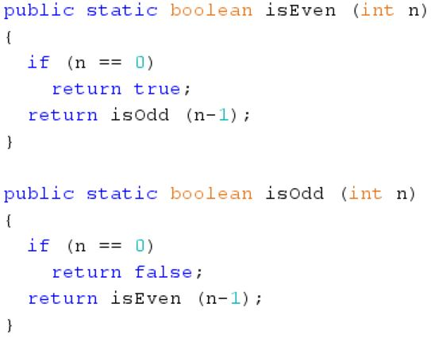

Hi there! Welcome to my recursion tutorial! In this tutorial I'll be covering a bunch of topics about recursion,
including what it is, when it should be used, and the various advantages and disadvantages of using it. I will also
talk about a few tips to keep in mind when using recursion as well as a lot of examples that will help you understand
the concept. The code examples can be found in the My Projects section of my website.
Let's start off with simple scenario that will help us build up to the idea of recursion - the math factorial
function. The factorial function of a positive integer is defined as the product of all positive integers less than or equal
to that integer. The function is denoted by an exclamation mark "!". For example, the factorial of 8 = 8! =
8*7*6*5*4*3*2*1 = 40320. Let's say that we need to create a factorial method that takes in an integer and returns
the factorial of that integer. Take a moment and try to create your own method that does this before we do it together.
The key pattern here to realize here is that the factorial of any number is equal to that number times the factorial
of that number minus one. From the previous example of 8!:
Notice that the problem can be decomposed into a smaller problem repeatedly until you get to the answer. This is the
basic idea of a recursive method, breaking up the problem into smaller parts until you arrive at the solution. It does this
by repeatedly calling itself until it gets to a special base case.
This base case, which is where the recursion stops, allows
you to actually evaluate the result. For a factorial method, the base case for the recursion would be when the parameter equal 1. In this case,
you would define the factorial of 1 as equal to 1, effectively stopping the recursion. Here is an implementation of the method:
As you can see, the algorithm is very straightforward. If the parameter n is equal to 1, return 1. Otherwise, return n times the factorial of n-1.
Now let's delve a bit deeper into the types of recursion. The factorial method that we just developed is considered as tail recursion.
Tail recursion is when the recursive method returns itself at the end of its execution (hence the name "tail"). In our factorial method,
the method returns itself in the last line (at the end of execution). This basically creates a loop until the base case is reached.
The other type of recursion is mutual recursion. Mutual recursion is when you have 2 recursive methods that repeatedly call each other until
a base case is reached. This type of recursion is very useful for traversing more complex data structures such as trees, which you'll
probably come across in your future learning but it out of the scope of this tutorial. Here we'll be introducing you to an admittedly not-too-useful
application of mutual recursion. However, this example will show you how mutual recursion actually works, giving you the basic understanding for future
applications. The problem is to figure out whether a number is even or odd. Of course you can easily figure this out with the modulus operator,
but we'll be using mutual recursion to figure it out. The basic idea is that say you want to check if a number is even. If that number is even, then
that number minus one is odd. So you just have to check whether that number minus one is odd.
Similarly, if you want to check if a number is odd, you have to check whether that number minus one is even. Here is the pseudo-code for the methods:
isEven (number n)
if n is 0 return true
otherwise return isOdd (n - 1)
isOdd (number n)
if n is 0 return false
otherwise return isEven (n - 1)
As you can see, each method calls the other method repeatedly (tail recursion) until a base case where n = 0 is reached. Here are the implementations
for the methods:

Now we'll be talking about a few tips to keep in mind when deciding whether to use recursion for a problem. First of all, you must be able to
break down the problem into smaller, similar pieces for a recursive solution. For example, if you want to find 2^5, this can be re-written
as 2 * 2^4, so the original problem has now been decomposed into the problem of finding 2^4. Secondly, there must be some sort of base case
where the recursion stops. From the same example, the base case would be 2^0, which should be returned as 1. This is an extremely important point
when using recursion, because if the recursion does not stop somewhere, the repeated method calls takes up memory and will result in a
StackOverflowError. Finally, there must be a way to actually piece together the smaller parts to get to the end result. Again from the same example,
we can piece together the results by multiplying them by 2 each time. For example, 2^5 = 2 * 2^4, which pieces together the two smaller portions
of 2 and 2^4. Keep this requirements for recursion in mind when solving problems.
The opposite of a recursive solution to a problem is known as an iterative solution. While recursion repeatedly calls a method over and over
until it reaches a base case, iteration uses a loop to accomplish the task. For example, here is a simple method that adds up the elements of an
integer array both in recursive and iterative form:
Note that the recursive method has an extra parameter for the index from which to start adding elements. This is required to perform the recursion.
If you want to add up all the elements in the array, simply input 0 as this paramter (indicating that all the elements at and after the 0th index
will be added up).
One advantage of using recursion over iteration is that it is often easier to understand and implement than iteration. For example, if we go back to the factorial
method, we could just as easily create an iterative solution by using a for loop. However, visualizing the factorial method in terms of itself,
like 8! = 8 * 7!, is much easier to understand. In addition, recursive solutions are often preferred by programmers because they are algorithmic
solutions, meaning that they are more elegant than iterative solutions.
However, there are also a few disadvantages when it comes to using recursion. Most importantly, because of the repeated method calling,
more memory is used and more time is taken. This is something to keep in mind when considering the use of recursion in larger-scale projects
where time and memory are a concern (think large multiplayer games).
Now before an example, I'll just show you a few tricks that I use when solving recursion-related problems. The most important thing
is to recognize clearly where the base case is. By that, I mean just visualizing how the recursion will work and how it will stop before you start
coding. Recursion is one of those programming techniques where it's more beneficial to spend 20 minutes thinking out the process in your head but
only 5 minutes coding. Another valuable trick is to actually sort of teach yourself the process out loud. For example, if you're using recursion
to calculate powers of 2, you could help yourself visualize the process like this: "So first, we split up the question, say 2^5 into 2 * 2^4. Now
we just have to solve 2^4. Then we split up 2^4 into 2 * 2^3. Now we just have to solve 2^3. Keep doing this until your problem is to solve 2^0,
which is defined to be 1." This way, you actually understand the main parts of the recursion - how to split up the problem into smaller pieces and
the base case.
Now I'll be showing you an example problem for recursion that I solved for an assignment in the ICS4U0 class that I'm currently taking. The problem
is as follows: write a recursive boolean method that will traverse a 5x5 2D int array representing a maze with walls represented by 1 and paths
represented by 0. If an exit is found in the maze, true will be returned. You must check all possible entrances (which can only be in the first
row or column of the maze) to see if an exit is found. An exit must be only in the last column or row of the maze. The recursion stops when the
first exit is found (there might be multiple entrances and exits, or none at all). You cannot create any other arrays in the program, and you can
use a helper method for the recursion to go through all possible entrances to the maze.
Here is a link to my solution to the problem, where you can run the code for yourself and test it out. I recommend that you solve this problem first before seeing my
solution.